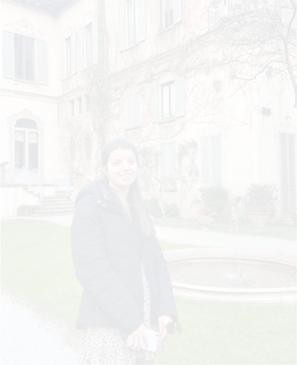

Hoi, Ik ben Mirthe Verdurmen
Ik ben een 21-jarige creatieve designer en beginnend front-end developer. Al negen maanden woon en studeer ik in Eindhoven, maar ik kom oorspronkelijk uit Hulst, een stad in de provincie Zeeland.
Op dit moment volg ik de opleiding ICT & Media Design, waarin ik onderzoek hoe technologie en design elkaar versterken om betekenisvolle en gebruiksvriendelijke ervaringen te creëren. Mijn interesse liggen vooral bij het coderen. Ik vind het heel interessant om nieuwe talen/technologieen te leren. Naast mijn studie speel ik volleybal bij studentensportvereniging Tamar en werk ik in het weekend bij de Albert Heijn in Hulst.